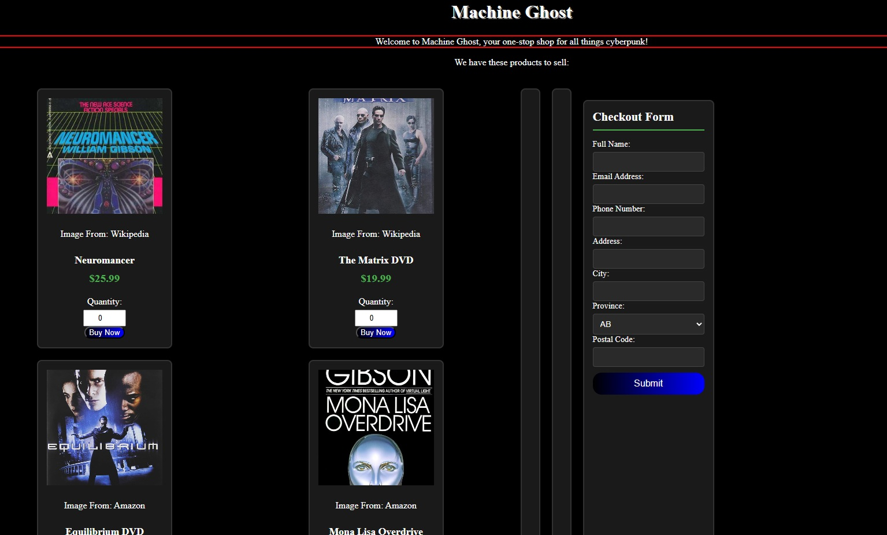
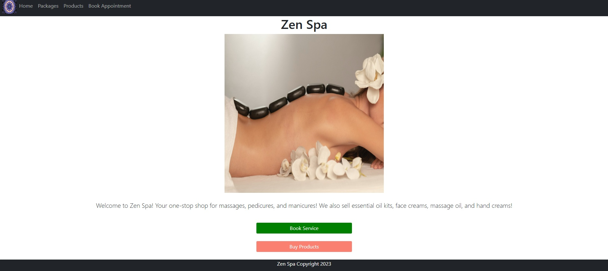
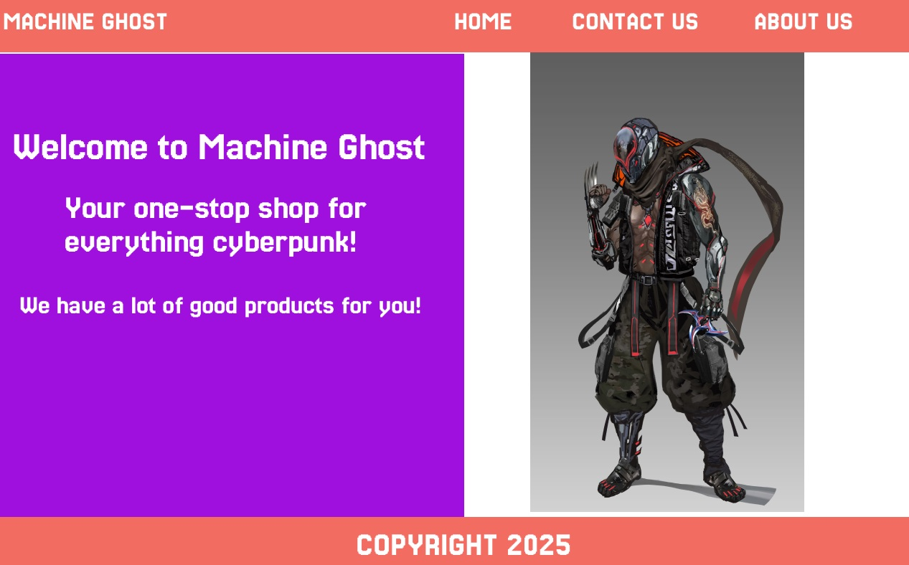
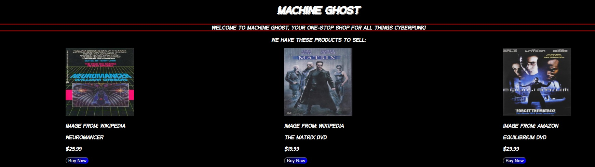
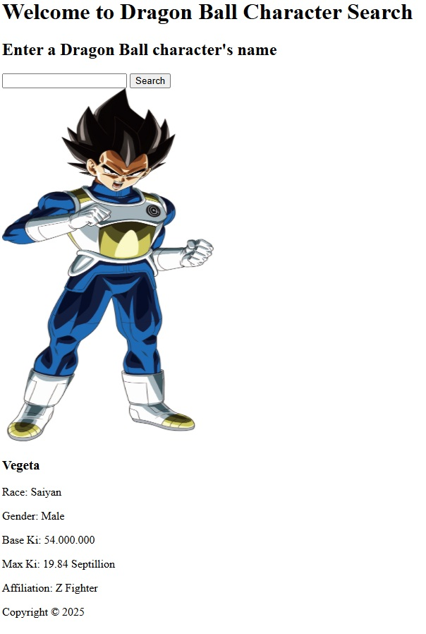
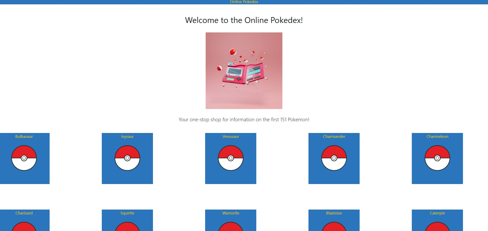

Machine Ghost eCommerce
An ecommerce website that sells cyberpunk media, such as books and DVDs. Comes with a shopping cart and checkout form.
GitHub LiveHave a look around at my work.
Here are my portfolio pieces:

An ecommerce website that sells cyberpunk media, such as books and DVDs. Comes with a shopping cart and checkout form.
GitHub Live
A spa that sells packages and products. You can also book an appointment.
GitHub Live
Design of a three page website for desktop, tablet, and mobile. Contains a nav bar to move through the site.
Figma file
An ecommerce website that sells cyberpunk media, such as books and DVDs.
GitHub Live
A site that lets you search for a Dragon Ball character and receive information on them.
GitHub Live
A site that contains information on the first 151 Pokemon.
GitHub LiveI'm a multidisciplinary web developer who believes that the right website can change the world for the better. I'm a minimalist designer, believing that design should be streamlined and efficient. Being passionate about social justice, I was inspired to pursue web development while helping make and maintain websites for organizations that I was volunteering for. It made me realize how important websites are for getting a message across and spreading it to people. I value compassion, connection, and community, and strive to make websites that help people.
Follow me on LinkedIn